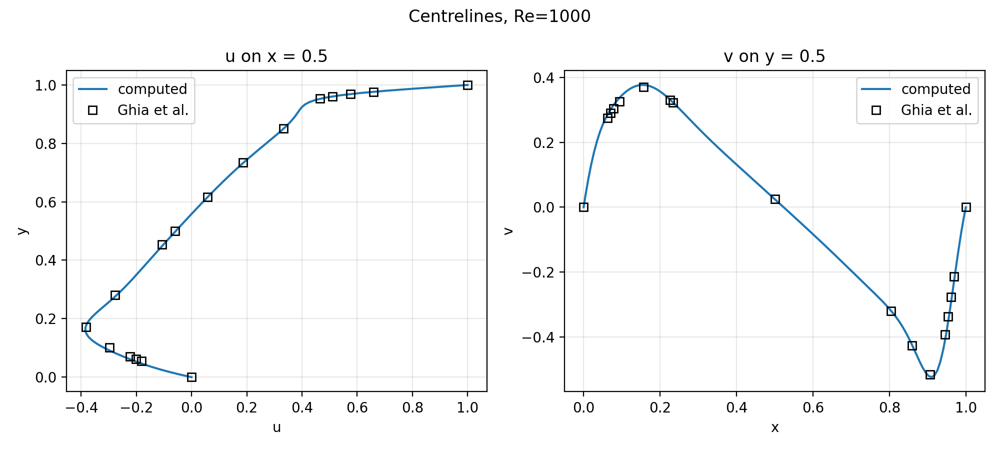
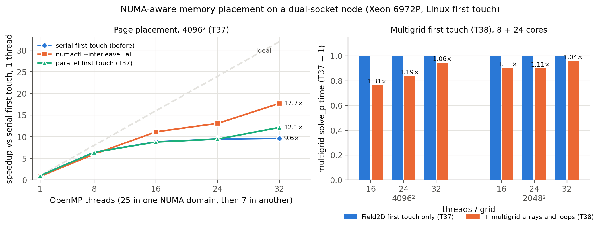
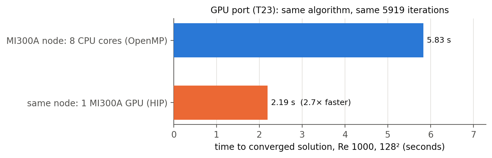
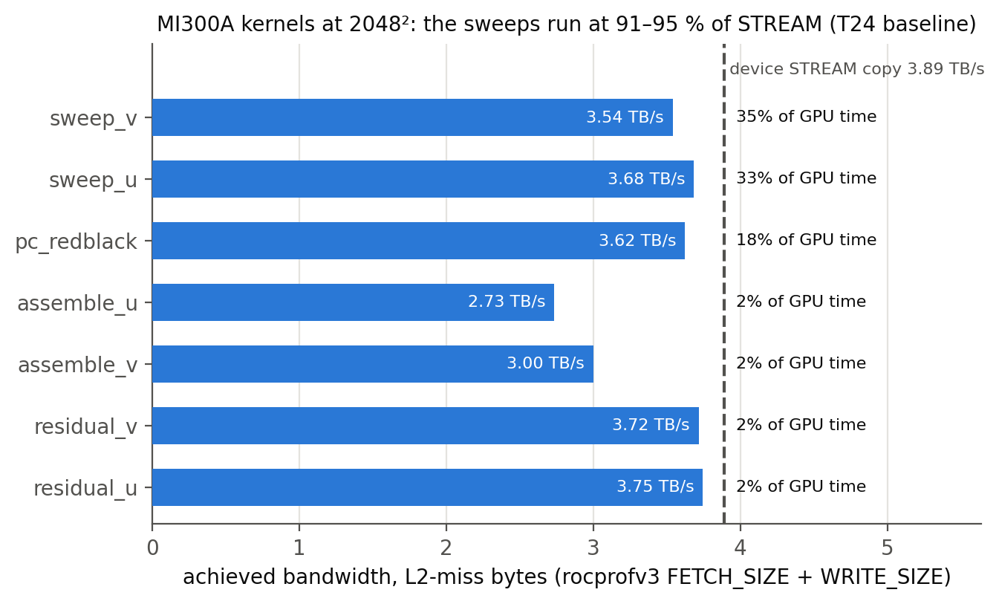

An incompressible Navier–Stokes solver tuned for multicore CPUs and GPUs
A C++17 finite-volume SIMPLE solver for the lid-driven cavity (staggered grid, QUICK convection, multigrid pressure correction). I parallelised it with OpenMP, made its memory placement NUMA-aware, and ported it to the GPU with HIP. Every step is measured on a dual-socket Intel Xeon 6972P node and an AMD MI300A, against a memory-bandwidth baseline taken on the same hardware.
Correct first
Speed only counts if the answer is right. The solver reproduces the Ghia et al. (1982) benchmark at Re 400 and Re 1000. The validation runs are part of the test suite (68 tests, run on the cluster), and snapshot tests pin the numerics so that no optimisation can quietly change results.

Scaling on a 32-core slice of a CPU node
The momentum and pressure sweeps use multicolour Gauss–Seidel, so cells of one colour update in parallel. The pressure equation uses a geometric multigrid V-cycle. Small grids fit in the node's large L3 cache and scale super-linearly; large grids follow the STREAM bandwidth curve. They are memory-bound, which is the expected ceiling for a stencil code.

Putting memory where the threads are
The node splits each socket into NUMA domains. Linux places a memory page in the domain of the thread that first writes it, and the solver used to initialise every array from one thread. I switched to allocating without zeroing and writing each array first in parallel, with the same row split as the compute loops. Each thread then works on local memory.

Porting to the GPU
The HIP backend runs the whole outer iteration on the MI300A, with all fields resident on the device and one thread per cell. Reductions use a fixed-order block tree, so runs are deterministic, and tests check each GPU phase against the CPU code.

Profiling: where the GPU time goes
The kernel traces and hardware counters from rocprofv3 answer two questions: which kernels
cost the most, and how close each comes to the memory bandwidth measured on the device itself with a
STREAM-style HIP kernel.

How it is built
- Reproducible measurements: Slurm scripts for every experiment, fixed thread placement, medians of repeated runs, and a STREAM baseline measured on the same cores in the same job.
- Guarded numerics: Catch2 unit, snapshot and validation tests run on every build.
- Claims backed by data: every claim on this page comes from a benchmark CSV or a profiler output, not from a single wall-clock run.